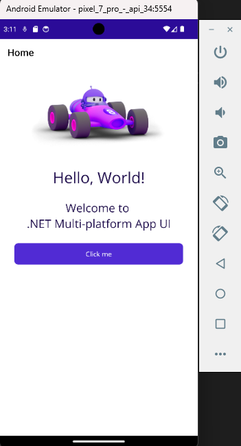
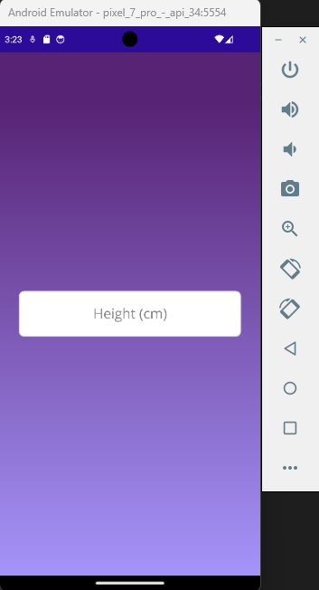
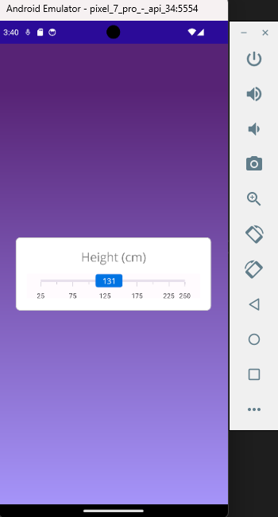
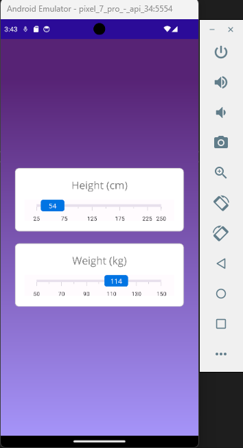
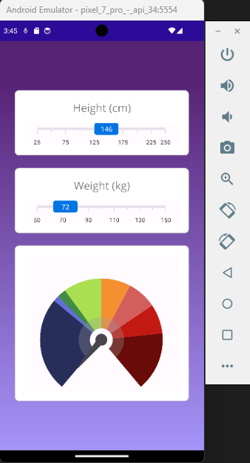
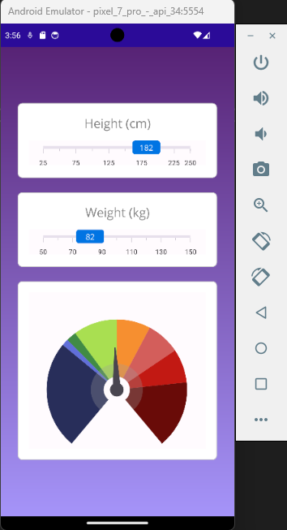

ProjectProyecto
The goal of this project is to build a body mass index calculator with .NET MAUI, applying what I learned in the course about interface development and data architecture in applications. The main topics covered include using NuGet packages to render charts and integrate their features into the project, using BindingContext, implementing the INotifyPropertyChanged interface to handle communication between the logic and the XAML interface, and applying the MVVM (Model View ViewModel) pattern.
El objetivo de este proyecto es desarrollar una calculadora de índice de masa corporal utilizando .NET MAUI, aplicando conocimientos aprendidos en el curso para el desarrollo de interfaces y de la arquitectura de datos en aplicaciones. Entre los principales temas que se abordan está el uso de nugets para generar gráficos y poder utilizar sus funcionalidades acopladas al proyecto, uso de BindingContext, implementación de la interfaz INotifyPropertyChanged para manejar la comunicación entre la lógica y la interfaz del XAML y utilizar el patrón MVVM (Model View ViewModel).
Project LinksEnlaces del Proyecto
ChallengesRetos
Using NuGet packagesUso de Nugets
Import and configure the Syncfusion.Maui.Gauges library (version 28.2.3).
Importar y configurar la librería Syncfusion.Maui.Gauges (versión 28.2.3).
MVVM patternPatrón MVVM
Apply the MVVM pattern to keep the logic separate from the interface, simplifying data binding and code organization. ViewModels and XAML files were used to connect the business logic with the visual layer.
Aplicar el patrón MVVM para mantener la lógica separada de la interfaz, facilitando el data binding y la organización de código. Se usaron ViewModels y archivos XAML para conectar la lógica de negocio con la capa visual.
Project ScreenshotsCapturas del Proyecto





